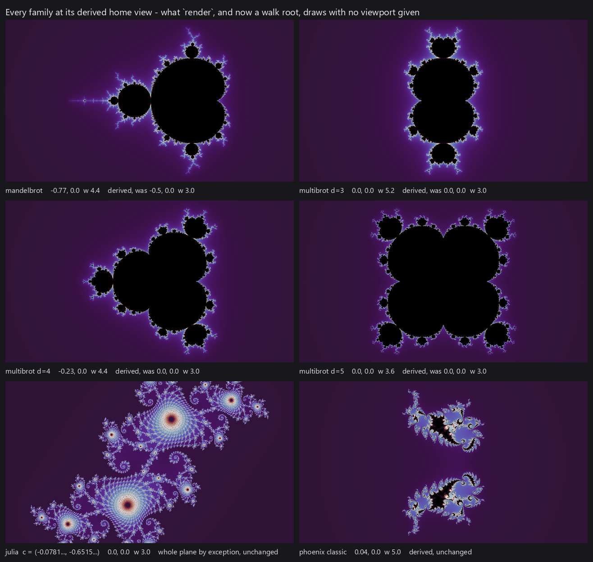

All the fractals I render in fractal-wallpapers come from a single kind of mathematical object — the two-dimensional escape-time fractal. This page covers what these objects are and the variants the project draws from.
Iterating in the complex plane
The images are built in the complex plane: numbers of the form x + yi. Multiplication is the part that matters here — multiplying complex numbers multiplies their lengths and adds their angles, so squaring a number stretches and rotates it at once. Iterate a rule built on squaring and orbits don't simply grow or settle the way real-valued sequences tend to: they spiral, fold back across themselves, and become extraordinarily sensitive to where they started. All the structure on this site comes from that sensitivity.
The Mandelbrot set
The most famous escape-time rule is also the simplest. Pick a constant c, start at z = 0, and repeat:
z = z*z + c
Only two fates are possible: the sequence stays bounded forever, or it escapes to infinity — and once |z| exceeds 2 it is gone for good, so escape is easy to detect. Count the steps until that happens and you have the orbit's escape time. That count is the entire algorithm, and escape-time fractals are named for it.
Figure pendingAnimated: three starting points advancing in step across the plane — one escaping fast, one bounded, one lingering near the boundary — with a |z|-versus-step chart alongside.
To turn the loop into a picture, let each pixel be a different constant c and run the loop at every one. Paint the never-escaping points black and the rest by how long they held out, and the Mandelbrot set appears: a black interior wrapped in a halo of escape times that carries all of the visible structure.
The remarkable part is where the detail comes from. Deep inside the set, nothing escapes; far outside, everything escapes in a few steps and the image is a bland gradient. Near the boundary, though, the tiniest nudge to c flips a point between the two fates, and the escape time varies wildly at every scale you can reach. Zoom in anywhere along the boundary and structure keeps arriving — spirals, filament tangles, even miniature copies of the full set — without end. All of the beauty in this project lives in that boundary zone, and the search half of the pipeline (Finding good locations) exists to navigate it.
Figure pendingA strip of successive zooms into one point on the Mandelbrot boundary, each frame the marked box of the frame before it.
Julia sets
The same formula draws a second kind of picture. In the Mandelbrot set, every pixel is a different c and every orbit starts at z = 0. Flip that: fix one c, and let each pixel be a different starting z. The image now shows which starting points survive under that particular c — a Julia set. Every point of the complex plane has one, and the Mandelbrot set works as an atlas of them all. Choose c deep inside the set and its Julia set is a solid, rounded blob; choose it far outside and the set shatters into disconnected dust; choose it near the boundary and the Julia set takes on the character of its neighborhood, unfurling the local spirals and filaments across the whole image. The pipeline uses this directly: when the search finds a rich neighborhood in the Mandelbrot set, the c values there are seeded as Julia-set candidates too.
The blob-versus-dust split is not a matter of degree — it is a sharp theorem: a Julia set is connected, one unbroken piece, exactly when its c lies inside the Mandelbrot set, and it shatters the moment c leaves. In fact the Mandelbrot set can be defined as exactly the set of c values whose Julia sets are connected — its connectedness locus.
Figure pendingThe Mandelbrot set as an atlas: several c values marked on it, each with the Julia set it produces beside it — a solid blob from deep inside, disconnected dust from outside, a filigree from the boundary.
Multibrot sets
Nothing about the loop is specific to squaring. Raising the power gives the multibrot sets, z → z^d + c, which add rotational symmetry the classic set doesn't have — degree 3 renders with two-fold symmetry, degree 4 with three-fold, degree 5 with four-fold, and so on — and each degree has its own Julia sets, made exactly the same way as before.
Figure pendingThe degree-3, degree-4 and degree-5 multibrot sets beside the classic degree-2 set, with one zoom each.
Fractional degrees
The degree doesn't have to be a whole number — z^2.5 + c is a perfectly computable rule, and the resulting sets morph continuously between the integer shapes. But non-integer powers come at a price: raising a complex number to a fractional power goes through the complex logarithm, which has no single consistent value. You have to cut the plane somewhere and pick a branch, and every orbit that crosses the cut jumps. The renders carry sharp seam lines that are artifacts of that choice rather than of the dynamics — ambiguous, since a different branch gives a different picture, and visually stark. They're interesting, but I find the sharp discontinuities a bit jarring and don't use them as one of the core fractal types that this project uses when searching for beautiful wallpaper locations.
Figure pendingSets at fractional degrees d = 0.5, 1.5, 1.9, 2.1, 2.5 and 2.9, with a zoom or two showing the branch-cut seams.
Phoenix fractals
The phoenix fractals change the rule itself rather than the power. In every family above, the next value depends only on the current one. The phoenix iteration adds memory — the update uses the previous value as well:
z_next = z*z + c + p*z_prev
where the new constant p sets how strongly the past feeds back into each step. The extra term dramatically changes the character of the images: orbits are steered by where they just were, and the renders grow feathery, plume-like structures that none of the memoryless families produce. A phoenix image is drawn the way a Julia set is — fix the constants, let each pixel be a starting z — so there is no separate "phoenix Julia" variant; the family is already that kind of picture. The classic render uses one celebrated pair of constants found by Shigehiro Ushiki in 1988; this project treats (c, p) as a whole plane of possibilities and hunts it the same way it hunts everything else.
Figure pendingThe classic Ushiki phoenix render beside several finds from elsewhere in the (c, p) plane.
The project's families
Altogether, the wallpapers here come from the Mandelbrot set and its Julia sets, the multibrot sets of degrees 3 through 5 and theirs, and the phoenix plane. These vary enormously in how easily they give up good images — some produce striking material almost anywhere along the boundary, others need real hunting — so a single quality bar applied across all of them would quietly fill every gallery with whichever family is easiest to photograph. The pipeline instead tracks each kind separately and balances the released mix across them; how that works is covered in Finding good locations and From locations to wallpapers.

Locations
One last piece of vocabulary the rest of the site leans on: a location. Every image above is pinned down by a family and its constants, a center point, and a zoom level — expressed as the width of the plane the frame spans, with the height following from the fixed 16:9 aspect ratio. Halving the width zooms in 2×, and since the boundary is detailed at every scale, you can keep halving essentially forever; ordinary double-precision arithmetic gives out first, at magnifications around ten trillion to one (Deep zoom covers going further). The rest of this site is about working in that space: Finding good locations covers the search through it, and Rendering fundamentals covers turning raw escape counts into images worth keeping.